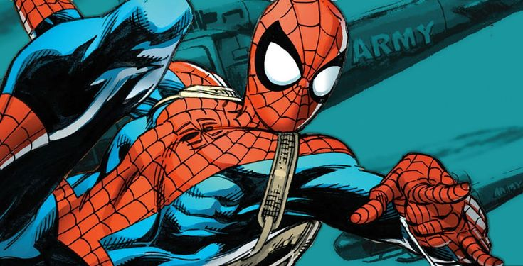

| Reference Image | |
|---|---|
|  | Spider-Man Life Story Issue #1, Art By Mark Bagley |
| Personal information | |
| Full Name | Peter Benjamin Parker |
| Species | Human, Pseudo Mutant |
| Origins | Queens, New York |
| Affiliations | Fantastic Four X-Men The Avengers Spider-Society The Defenders |
| Family | |
| Relatives | Benajmin Parker (Uncle) MayBelle Reilly (Aunt) Richar Parker (Father) Mary Parker (Mother) Mary Jane Watson (Wife) May Parker (Daughter) |
| Education | |
| School | Midtown High School |
| University | Empire State University |
| Bussines Information | |
| Degree/Major | Biophysics |
| Ocupation | Scientific CrimeFighter/Vigilante/SuperHero |